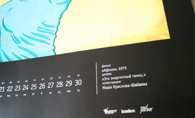
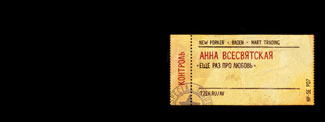
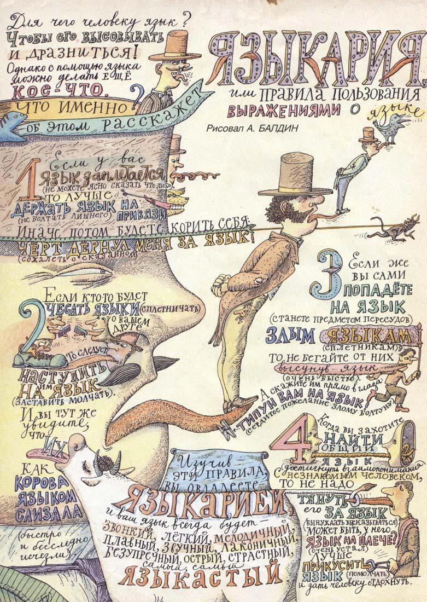
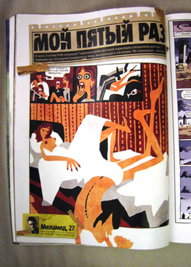
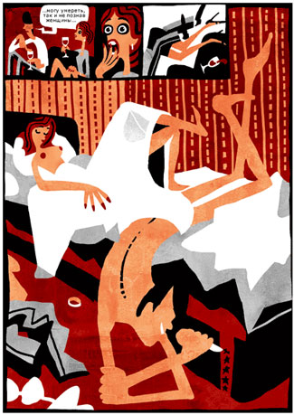
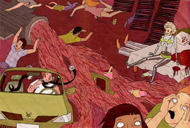
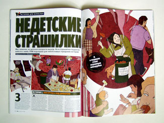

ВОЙНА МИРОВ
От Федора Сумкина
Маяковский очень не хотел, чтобы в одной энциклопедии его ставили на одной странице с Есениным. Однажды он пришел в редакцию и сказал: — Если вы меня поставите рядом с Есениным, я с собой такое сделаю, такое сделаю!
Анекдот, приписываемый Хармсу.
До сих пор мне не доводилось видеть ни одной статьи о такой актуальной теме как отношение дизайнеров и артдиров к иллюстрации… Точнее, как они работают с материалом. Возможно, об этом нигде не упоминалось, потому как кроме самого художника никому нет дела до его проблем. Да и какие тут могут быть проблемы? — Нарисовал картинку, отнес в журнал, приняли ее, напечатали… ну вот и славно! Уж как там попали в цвет, откадрировали или что-то там обрезали не важно. Даже среди коллег по цеху не принято жаловаться… «Что ты придираешься, да черт с ними! Тебе же гонорар выписали, ну вот и отлично». И только когда что-то случится непосредственно с твоей иллюстрацией, только тогда ты поймешь, что это нечего не отлично.
Итак, постараюсь держать себя в руках, воздержаться от не цензурных высказываний в адрес злодеев-дизайнеров и толком объяснить, в чем дело. Сразу хочу сказать, что у меня нет никакого волшебного метода борьбы с произволом и бездумным отношением к чужому труду. Цель этой статьи — привлечь внимание к сложившейся ситуации.
В наши дни профессия дизайнера очень востребована и не плохо оплачивается. Они нужны не только в издательском деле, но и в рекламе. Взять, например, пельмени, копченую рыбу, сливочное масло и автомобильные шины. Чтобы их продать и обойти конкурентов, кто-то должен придумать красивую упаковку и яркие рекламные плакаты. Лучше всего с этой задачей справится специалист по дизайну пельменей и копченой рыбе. Как правило, у настоящего профессионала много заказов, дело поставлено на поток и никаких сбоев на конвейере быть не может. Клиенты таким людям во всем доверяют, но вот тут-то и могут случиться проблемы.
В качестве первого примера хочу рассказать печальную историю, которая приключилась с моей иллюстрацией в календаре «Наше любимое кино». Картинку формата А2 честно рисовал дней пять. Времени было достаточно и хотелось отправить что-то достойное. Вообще, эпопея с календарем делилась полгода, если не больше. В проекте приняли участие многие известные иллюстраторы. Учитывая, что народ этот не самый организованный, Андрею Бадену и Сереже Максимову было не просто собрать всех вместе. Но кто бы мог подумать, что какой-то прокол может случиться с графическим оформлением. Когда я получил свой долгожданный экземпляр и нашел свою картинку, то пришел в ужас. Старого панка, Федю Сумкина, в потертых джинсах и драных кедах поставили в черную рамку и подписали золотом. Являясь ярым пропагандистом антигламура для меня это было ударом ниже пояса.

Вот так в печатной версии календаря некая Камилла Бартенева решила подписать авторов. Мелкий строгий шрифт — замечательная находка. Но, на мой взгляд, уместнее таким шрифтом указывать ингредиенты пельменей, а в черной рамке с золотыми буквами не плохо бы смотрелась фотография ведра красной икры.

Для сравнения привожу пример, как тот же самый текст оформил Сережа Максимов в пдф-версии. Собственно, после просмотра его варианта настроение немножко поднялось, и появилась идея написать этот эту статью. Вот, пишу… выпускаю пар, становится легче)).
Обращение с художественной иллюстрацией, как с пельменями, не редко случается и в журналах. Причем это было во все времена, задолго до Кварка и инДизайна. Случайно нашел страничку из культового в начале 90-х детского журнала «Трамвай»:

Как лихо на картинку, вся суть которой рисованные шрифты налепили подпись! Плевать, что автор не один вечер парился над этой иллюстрацией.. В номер поставили, гонорар выписали, чего еще надо?
В наши дни наплевательское отношение к чужому труду стало нормой. Если в первых двух случаях я рассказывал о спорных с юридической стороны случаях, то история, приключившаяся с иллюстрацией Виктора Меламеда в журнале FHM, явно достойна судебного иска:

Иллюстрация по случаю пятилетия журнала на тему «мой пятый раз», что, собственно, и было нарисовано…

...Но в журнальной версии самая главная часть почему-то не прошла цензуру, от чего картинка потеряла всякий смысл. Возможно у вышеупомянутого журнала на столько тупые читатели, что редакция решила избавить их от высокоинтеллектуальных изысков… В тупую зафигачим заголовок «мой пятый раз», ну а там — хоть трава не расти.
Спустя некоторое время Ирина Троицкая подготовила для того же FHM-а целый разворот:


Совсем не обязательно быть экспертом в области иллюстрации, что бы понять, сколько времени нужно потратить на такую работу. Обычно это пару вечеров, или вечер, переходящий в обед.
О чем думали дизайнеры, оставляя от разворота только небольшой кусочек, никто не знает.
Вот уже 11 лет я работаю с рекламными агентствами и журналами… Но я до сих пор не могу понять, что нужно делать в таких ситуациях. Воевать как-то совсем не хочется. Повторюсь, цель этой статьи не обвинить Камиллу Бартеневу и журнал FHM, а привлечь внимание к данной проблеме. Ведь в отличие от пельменей, у иллюстраций есть автор. Сейчас появляется все больше художников, для которых рисование является главным источником доходов. Но помимо гонораров существует еще такая вещь как деловая репутация.
Федор Сумкин, специальный гость колонки